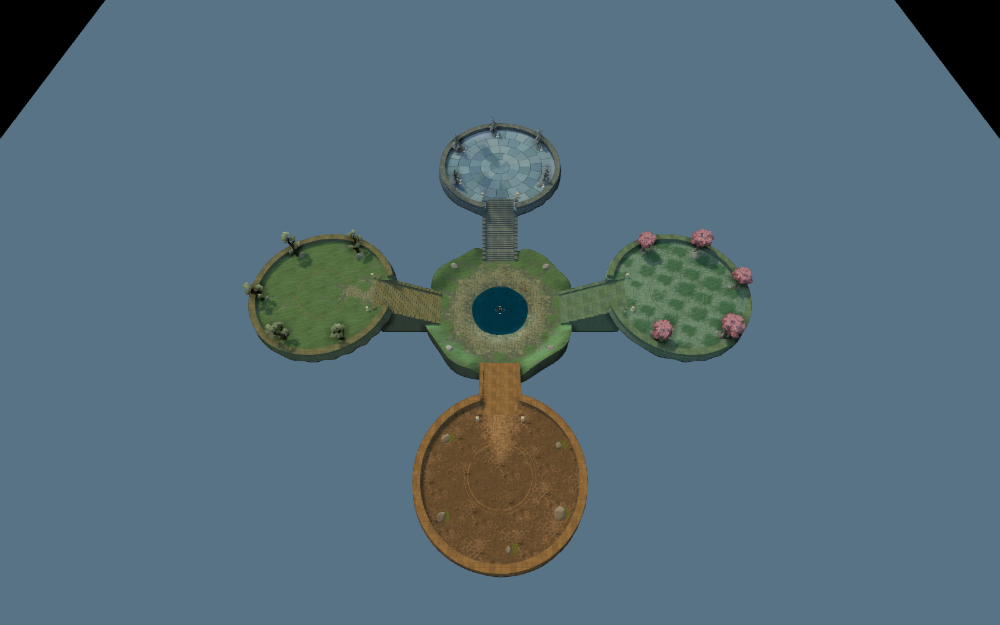
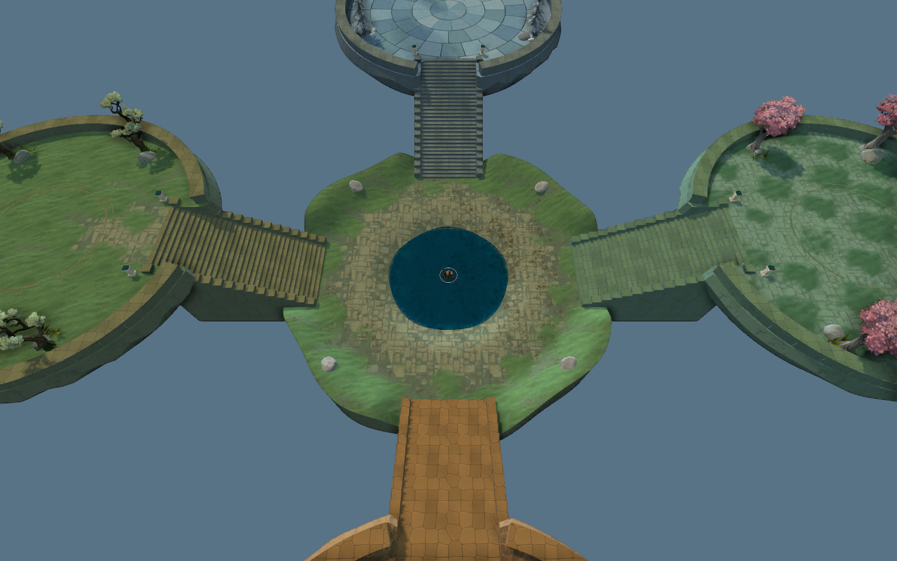
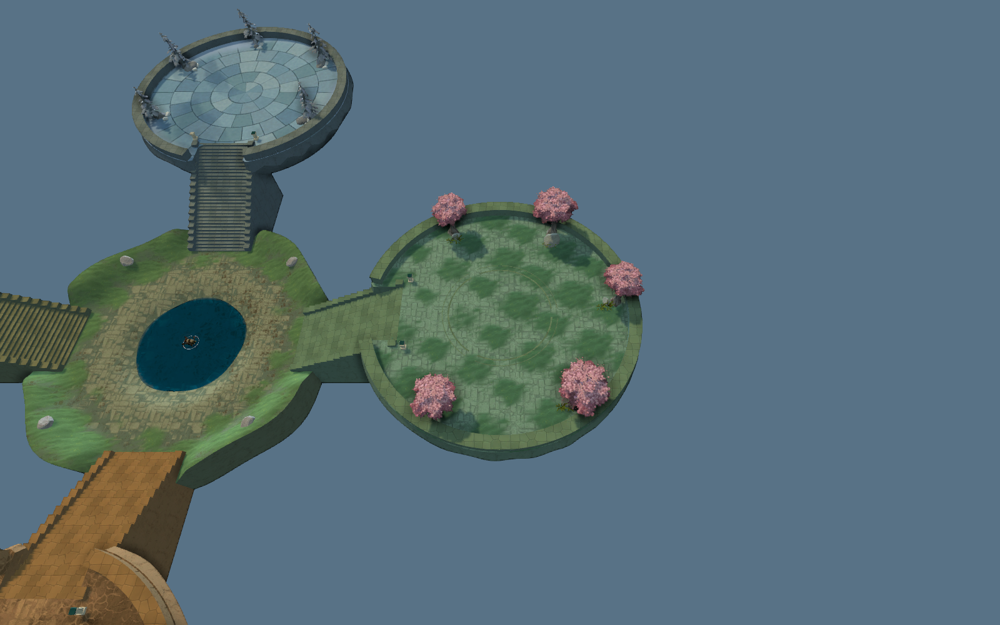
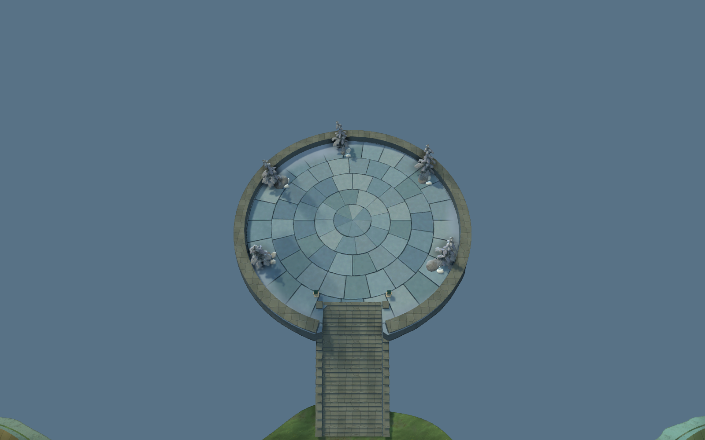
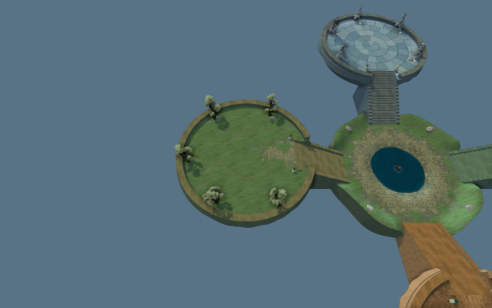
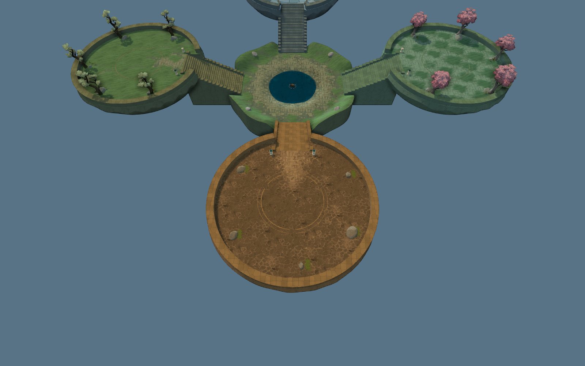
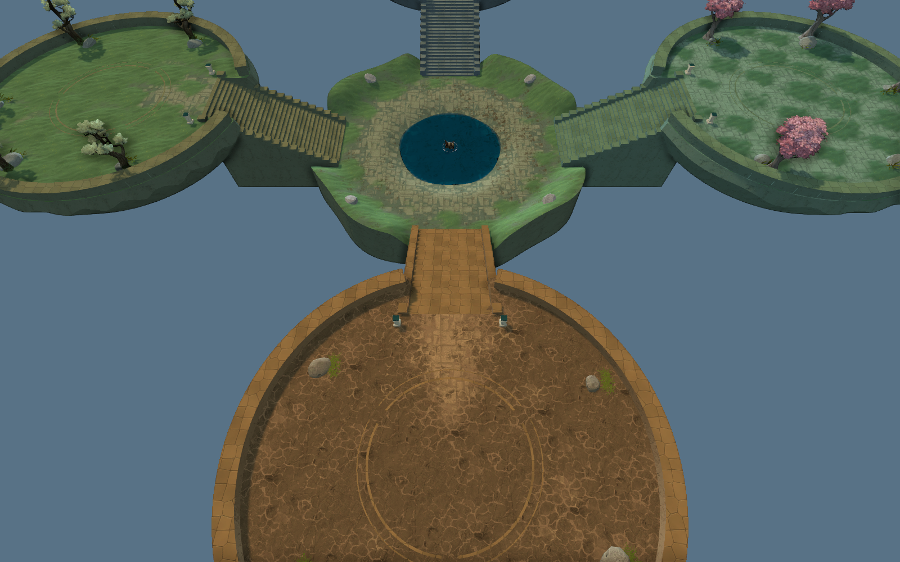

中央盆地 + 四座圆形建造区
这是新方向的独立实机样板，原来的整图仍保留。中央低盆地、四条可往返的窄阶梯、四座平坦的干燥建造平台，入口留出城墙缺口。以下为本次编译后的游戏截图。
打开 Hammer 分工与入门说明

整体结构中央低盆地与四座高平台；东桃花、北冰雪、西松林、南暖砂。
中央出生盆地中心是浅水洼，四个出口通向阶梯。
东 · 桃花青石偏青绿的石地、苔草过渡与边缘桃花。
北 · 冰雪石庭冷灰石地与积雪混合，内部保持平坦。 冰雪平台 · 新材质近景独立 Blender 石板模型烘焙颜色与法线；地面仍然平坦，积雪沿边缘覆盖。
冰雪平台 · 新材质近景独立 Blender 石板模型烘焙颜色与法线；地面仍然平坦，积雪沿边缘覆盖。
西 · 松林苔地草、土、岩石与旧石路连续混合。
南 · 暖砂石庭暖色砂土与岩石地表；内部无水域。
阶梯与城墙缺口单一窄通道可上下往返，顶端预留城墙位置。测试地图：survival_basin_review。四个方向已检查双向寻路、阶梯高度和通道外阻挡。城墙建造规则与正式出怪配置尚未迁移；此页用于确认局部结构、美术和尺度。